Women of The Great Depression
About
Dorothea Lange
Bio
Resources
The Experience
Migrant Mother
Migrant Homes
African-American Women
Long Memory
Login
Women of The Great Depression
Through the Photos of Dorothea Lange
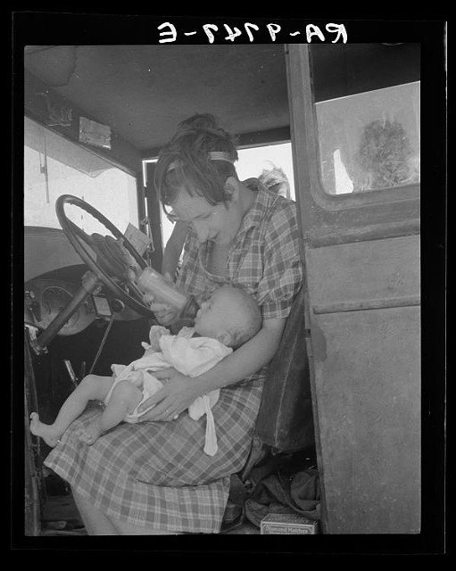 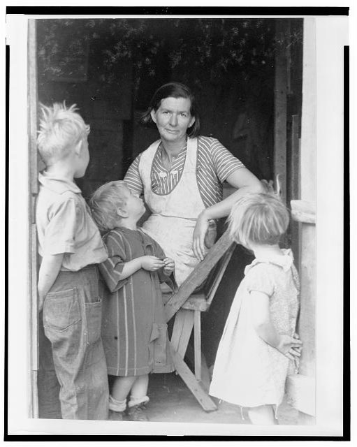
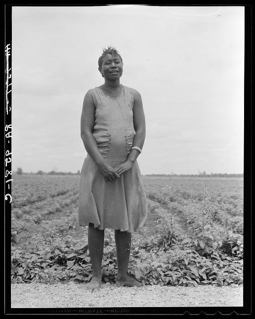 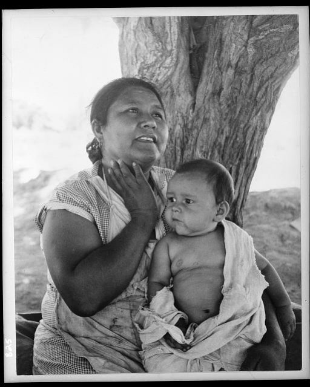 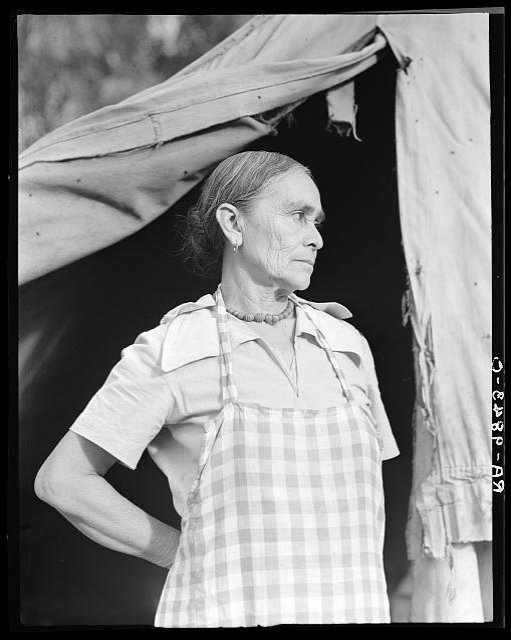 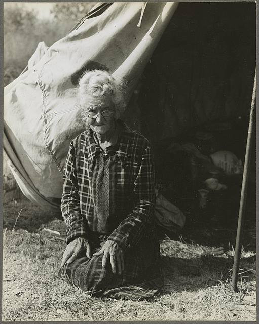
<
>
Click to see photo citations
"Mississippi Negress hoeing cotton. She was born a slave 'two years before the surrender.'"
June 1937. Library of Congress Catalog
"Wife and sick child of tubercular itinerant, stranded in New Mexico"
August 1936. Library of Congress Catalog
"Oklahoma squatter's family, Riverside Co."
1935. Library of Congress Catalog
"Pregnant migrant woman living in California squatter camp. Kern County"
November 1936. Library of Congress Catalog
"Negro woman who has never been out of Mississippi"
July 1936. Library of Congress Catalog
"Mexican mother in California. "Sometimes I tell my children that I would like to go to Mexico, but they tell me 'We don't want to go, we belong here.'" (Note on Mexican labor situation in repatriation.)"
July 1935. Library of Congress Catalog
"Migratory woman, Greek, living in a cotton camp near Exeter, California"
November 1936. Library of Congress Catalog
"Bakersfield, Calif. (vicinity). Grandmother of 22 children, from a farm in Oklahoma, 80 years old, now living in a camp "If you lose your pluck you lose the most there is in your - all you've got to live with."
November 1936. Library of Congress Catalog
 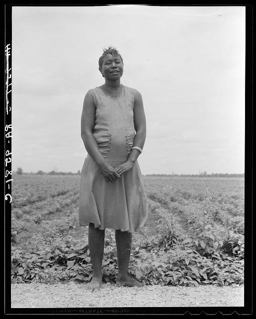
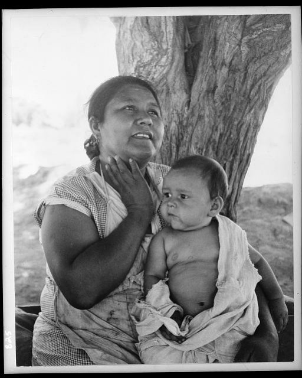
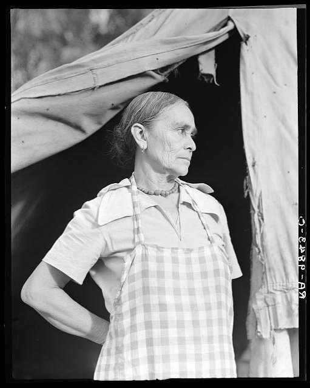
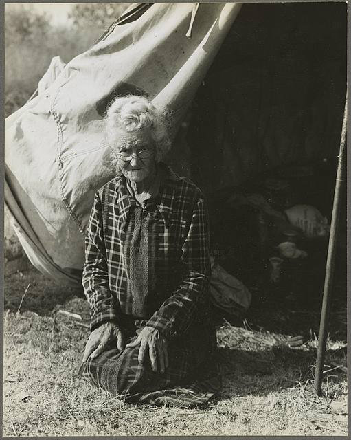
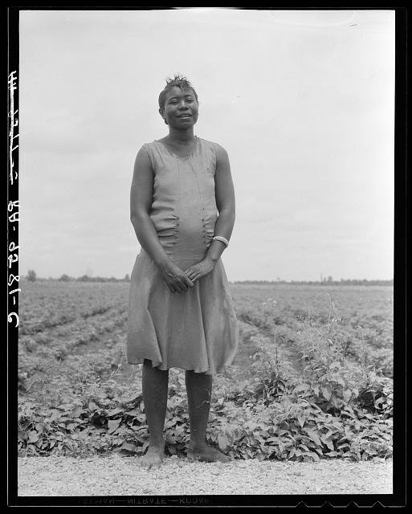
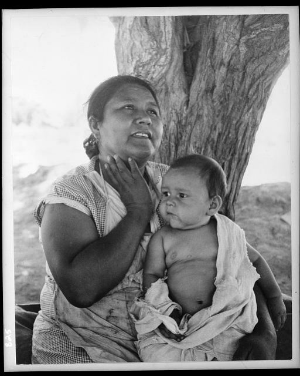
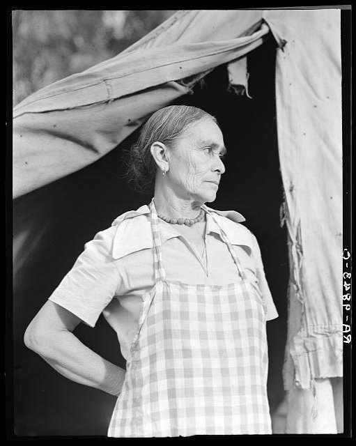
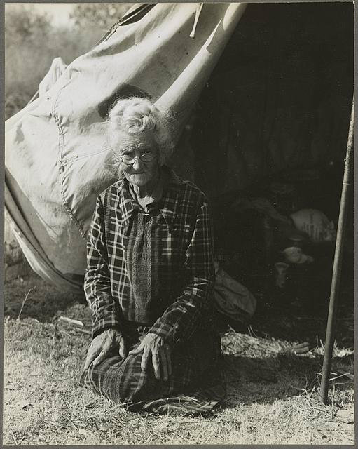
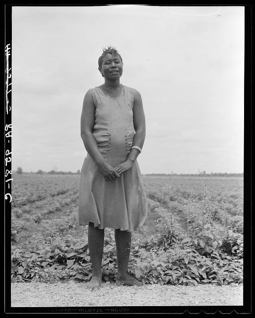
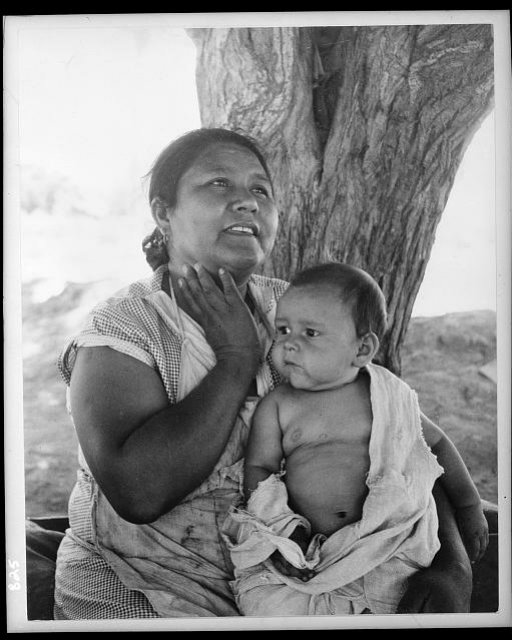
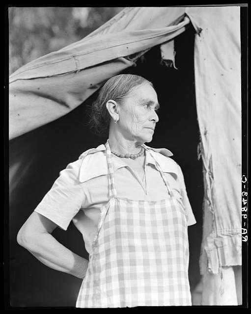
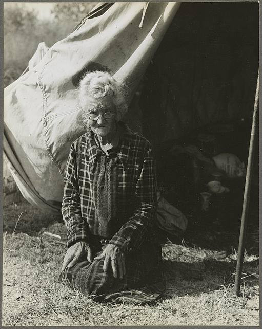
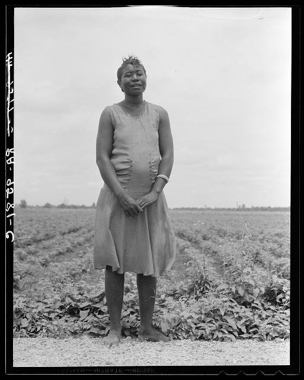
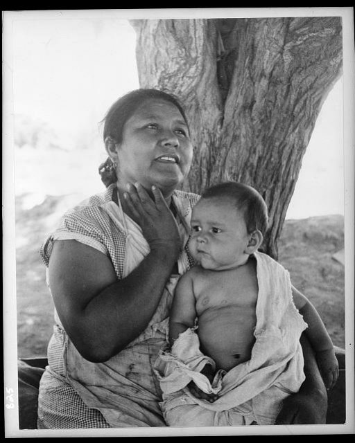
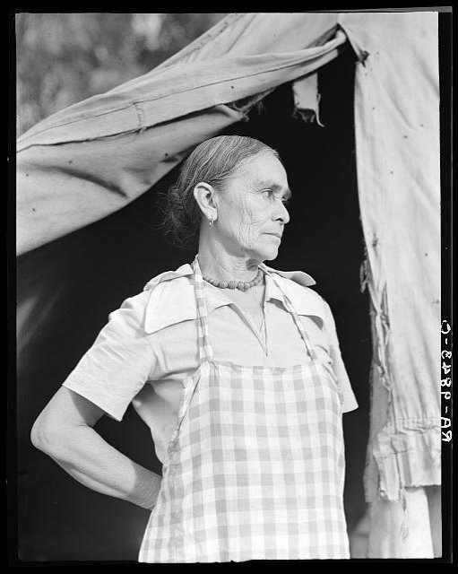
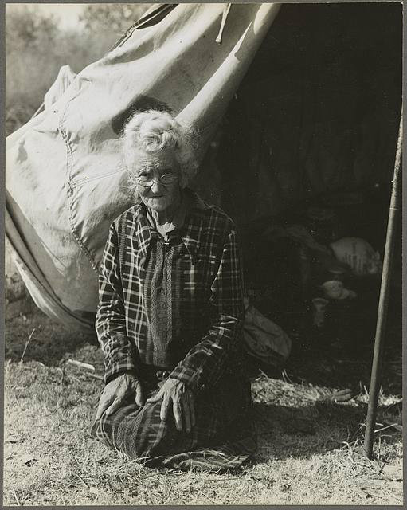